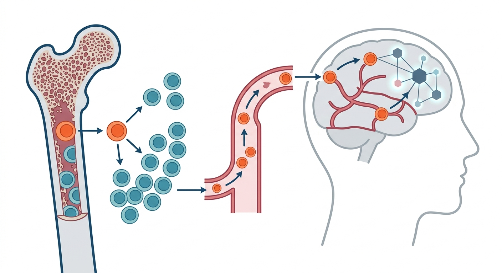

Bad Blood in the Brain: How Mutant Stem Cells Track the Footprints of Alzheimer's

Imagine your body’s blood production system as a bustling factory floor. For decades, it pumps out millions of pristine red and white cells every second. But as the years roll on, quiet mutations creep into the blueprints of the master stem cells. Rogue assembly lines begin to emerge, producing mutant clones that slowly outcompete their healthy peers—a phenomenon known as Clonal Hematopoiesis (CH). For years, scientists assumed the fallout of these rogue blood cells was largely confined to cardiovascular disease and leukemia. However, a groundbreaking new study suggests these rebellious clones may also be tracking a silent, devastating coup inside the human brain.
Published as a preprint on medRxiv, researchers tapped into the Lothian Birth Cohort 1936, a rare and deeply characterized group of older adults tracked over several years. Using advanced epigenetic profiling tools called COMET and CIMS, the team monitored the genetic and epigenetic footprint of clonal expansion in the blood of nearly 1,100 participants between the ages of 73 and 79. Simultaneously, they mapped the structural evolution of the participants' brains using repeated MRI scans. What they discovered bridges two fields of medicine once thought to be entirely separate: as the burden of mutant blood cells grew, the gray matter of the brain withered in a progressive, highly specific pattern.
This was not a generalized, random shrinkage of aging tissue. The cortical atrophy pattern mapped by the researchers precisely targeted the medial temporal and parietal regions—the exact neural coordinates that serve as the signature of Alzheimer's disease. While the subcortical regions like the caudate remained relatively spared, the cortex deteriorated in lockstep with the expansion of mutant blood clones. This systemic-to-cognitive linkage suggests that what happens in our bone marrow doesn't stay in our bone marrow; it leaves an anatomical fingerprint directly on our cognitive machinery.
For longevity investors and clinical trial design, this discovery is a goldmine. Evaluating neurodegeneration historically required incredibly expensive PET scans or invasive spinal taps. This research paves the way for scalable, blood-based epigenetic diagnostics. By using methylation-based algorithms to track clonal hematopoiesis, clinicians could theoretically screen, stratify, and monitor patients at risk of Alzheimer’s-like brain atrophy long before cognitive symptoms manifest, offering a massive window for preventative therapeutic intervention.
Yet, a critical eye is warranted before we declare this the ultimate biomarker for Alzheimer's. First, this study is strictly longitudinal and observational; it demonstrates a correlation, not a direct causal mechanism. We still do not know whether these mutant blood cells are actively driving brain atrophy—perhaps by promoting systemic inflammation that breaches the blood-brain barrier—or if both the mutant blood clones and the brain shrinkage are simply independent downstream symptoms of a deeper, shared biological aging clock. Additionally, the Lothian Birth Cohort is predominantly white, Scottish, and relatively healthy, meaning these findings must be validated across more diverse global populations. Lastly, as a preprint, these findings and the newly developed epigenetic classifiers (COMET and CIMS) must survive rigorous peer-review and standardization before they can be reliably deployed in clinical diagnostics.
Sources & Citations:
Primary Source: Clonal Haematopoiesis Tracks Alzheimer's-like Cortical Atrophy in Community-Dwelling Older Adults (medRxiv)
- Primary Source: "Clonal Haematopoiesis Tracks Alzheimer's-like Cortical Atrophy in Community-Dwelling Older Adults." medRxiv (2026). https://doi.org/10.64898/2026.09.10.26362681